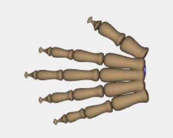
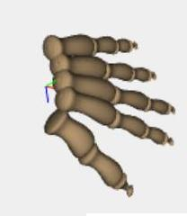
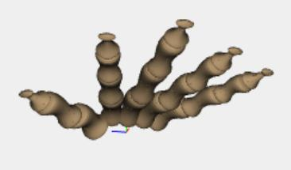

The project was developed as the final form of a course of study in Grafica Computazionale, hel by prof. A. Paoluzzi.
The model has two main functions: draw_MetacarpalsFalanges(...) that draws the metacarpals and phalanges bones (as we
can see in the documentation the bones are similar so they are represented with the same model) and draw_lastFalanges(...)
that draws the last phalanges (that are a little different and need another model). In the end, for each finger these functions
are called (receiving as parameters the length and the thick of the finger that is going to be drawn) and the objects are
rotated and translated properly. Below you can find some screens made of the model. The code can be found here.


